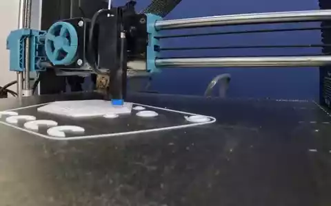

|
Felipe Tommaselli I am a first-year PhD student at the University of São Paulo (USP), advised by Prof. Marcelo Becker and co-advised by Dr. Ricardo V. Godoy. My research focuses on learning-based control and decision-making for robots, with a particular interest in understanding and improving learned representations. I also earned a BSc in Electrical Engineering at USP, with a minor in Computer Science, under the supervision of Prof. Robson Cordeiro. Previously, I was a visiting researcher at UIUC with Prof. Girish Chowdhary and worked on AI infrastructure as a software engineer at CloudWalk. |
 f.tommaselli@usp.br
f.tommaselli@usp.br
|
Research
My experience spans legged, aerial, and manipulation systems. I began with applied field robotics and am now pursuing more fundamental questions in robot learning throughout my PhD. I am currently working on:
- motion retargeting and whole-body policy learning for Boston Dynamics’ Spot;
- contact-rich manipulation benchmarks with the Franka Research 3; and
- representation analysis during training for legged-locomotion policies.
Publications
* denotes equal contribution.
 |
F. Tommaselli, T. Segreto, J. Negri, R. V. Godoy, M. Becker
Conference on Robot Learning (CoRL), 2026 paper (open-source soon, reach out for early access) |
 |
Towards Capability-Aware Traversability Navigation for Unstructured Environments
G. Capezzuto, F. Tommaselli, M. P. Angarola, R. V. Godoy, M. Becker IEEE/RSJ International Conference on Intelligent Robots and Systems (IROS), 2026 project page / paper / video |
 |
LeCropFollow: Latent Space Planning for Navigation in Unstructured Crop Fields
F. Tommaselli, F. Affonso, A. Rocha, G. Capezzuto, A. N. Sivakumar, G. Chowdhary, M. Becker IEEE Robotics and Automation Letters, vol. 11, no. 9, 2026 project page / paper / video / code |
 |
Learning to Walk with Less: A Dyna-Style Approach to Quadrupedal Locomotion
F. Affonso, F. Tommaselli, J. H. Aléssio, V. S. Medeiros, M. V. Gasparino, G. Chowdhary, M. Becker IEEE Access, vol. 14, 2026 paper |
 |
VLN on the Fly: An Onboard Vision-Language Navigation Stack for Aerial Robots
M. S. Tayar*, F. Tommaselli*, G. Capezutto*, P. A. R. Saraiva*, P. H. V. de Freitas, L. Kido, G. Sonego, R. V. Godoy, M. Becker International Micro Air Vehicle Conference (IMAV), 2026 project page / paper / code |
 |
CROW: A Self-Supervised Crop Row Navigation Algorithm for Agricultural Fields
F. Affonso*, F. Tommaselli*, G. Capezzuto, M. V. Gasparino, G. Chowdhary, M. Becker Journal of Intelligent & Robotic Systems, vol. 111, no. 1, article 28, 2025 paper / code |
 |
Autonomous UAV Flight Navigation in Confined Spaces: A Reinforcement Learning Approach
M. S. Tayar, L. K. de Oliveira, F. Tommaselli, J. D. Negri, T. H. Segreto, R. V. Godoy, M. Becker Latin American Robotics Symposium (LARS), 2025 paper |
Selected Projects
I enjoy building open software and hardware. As an undergraduate, I developed projects for hackathons and competitions; now, I seek to keep building research that others can reproduce, understand, and extend.
 |
HiveBoard
An open, modular, fully 3D-printed benchmark of 13 industrial mechanisms, validated across Spot, ANYmal, a tabletop arm, and a prosthetic hand. Under review project / code / video |
 |
Swarm in Blocks
A block-based platform for programming and monitoring multi-UAV swarms, developed with SEMEAR-USP. CopterHack, 1st place, 2022 code / video |